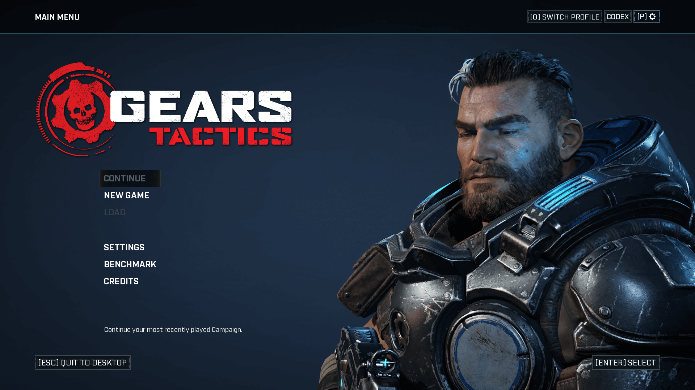
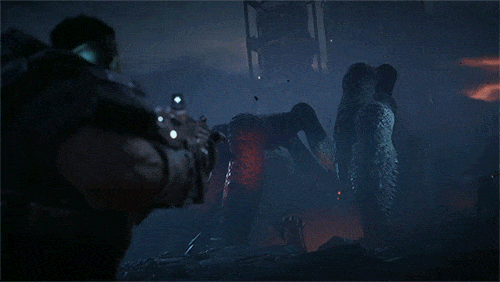
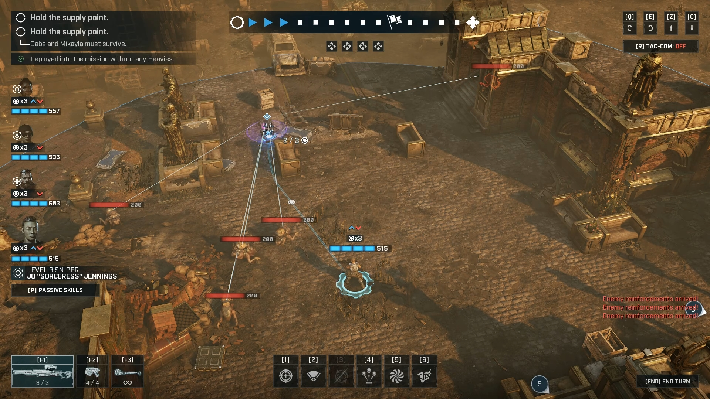
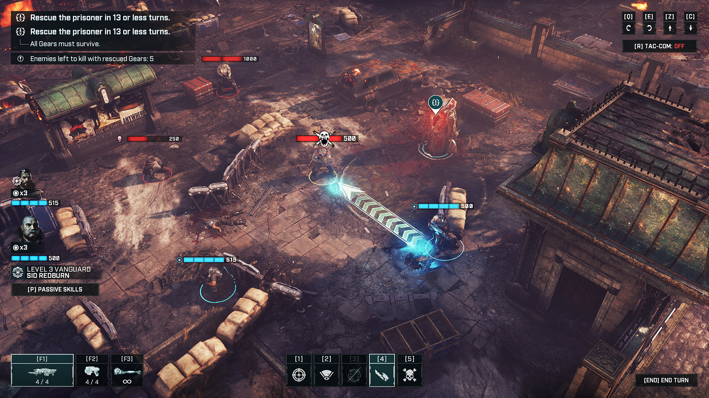

Gears Tactics
 |
 |
 |
 |
Desenvolvedora: Splash Damage e The Coalition
Plataforma: Xbox One, PC e Xbox Series S/X
Ano de Lançamento: 2020
Sinopse: Gears Tactics é um jogo de estratégia em ritmo acelerado, situado 12 anos antes do primeiro Gears of War. Cidades no planeta Sera estão começando a cair diante da ameaça monstruosa que surge do subsolo: a Horda Locust.
O jogador assume o comando de Gabe Diaz (pai de Kait Diaz), um soldado que deve recrutar, equipar e liderar seu esquadrão em uma missão desesperada para caçar e eliminar Ukkon, o mentor maligno por trás da criação dos monstros Locust. Diferente dos outros jogos da franquia, aqui a vitória depende de táticas inteligentes e gerenciamento de ações por turno, mantendo toda a brutalidade e o clima visceral característicos da saga.